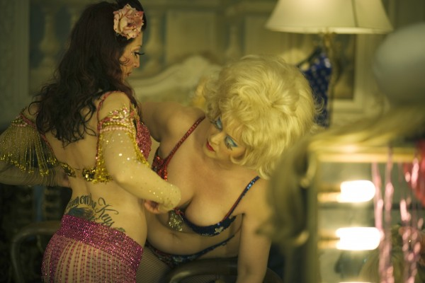
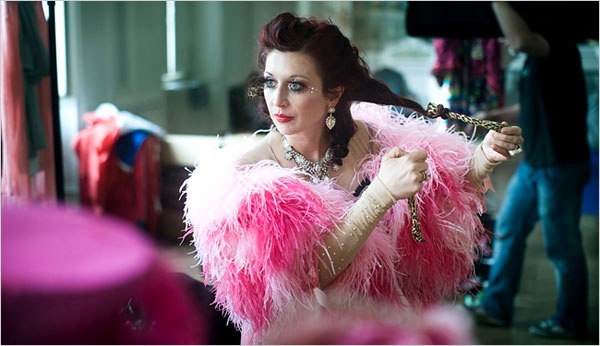
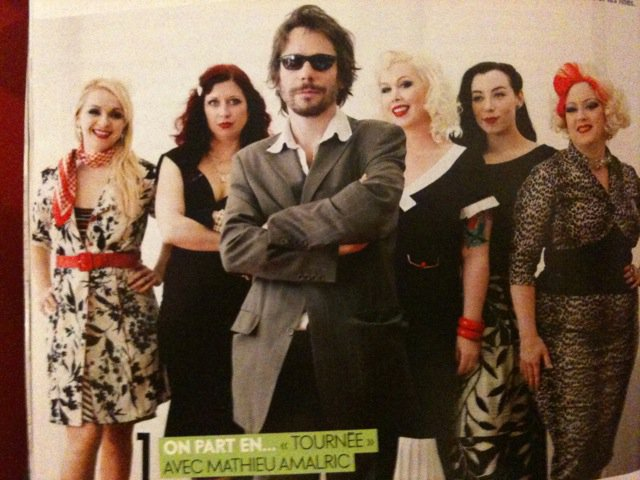

Soundtrack Available On Amazon UK Jade Editions Kitten's songs included
TOURNEE/On Tour FILM by
Mattieu Amalric
Look for Kitten on the Keys and the cast of Cabaret New Burlesque( Mi Mi le Meaux, Evie Lovelle, Roky Roulette, Dirty Martini, Julie Atlas Muz) in Mattieu Amalric's latest film. The film won Best Director for Matthieu Amalric. The cast was thrilled to walk the red carpet @ the 63rd Cannes Film Festival!
DVD/Blue Ray Available NOV 3rd in FRANCE
Opens in France June 30, 2010
BUY SOUNDTRACK from Kitten on the KEYS
Distributed by Le Pacte France
Produced by Film Du Poisson

TOURNEE by Mattieu Amalric
Kitten on the Keys, Roky Roulette, Dirty Martini, Mi Mi Le Meaux, Julie Atlas Muz, and Evie Lovelle
Mathieu Amalric